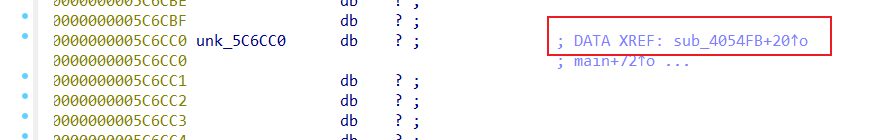
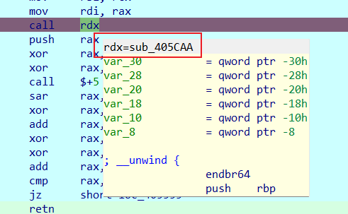
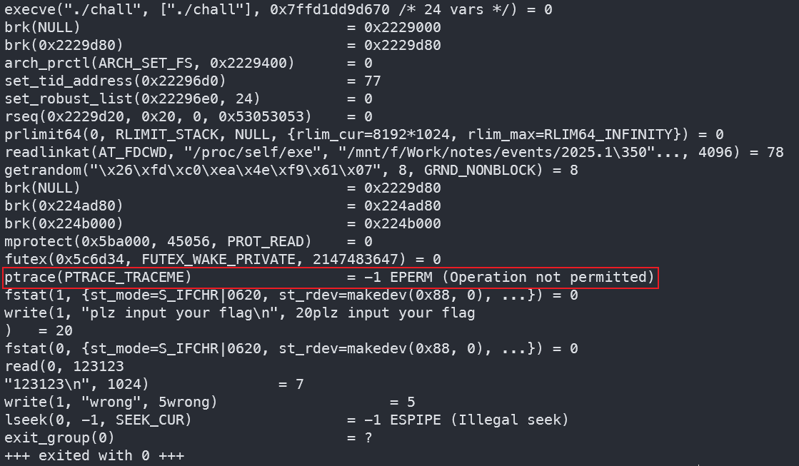

WP-[2025.1软件系统安全赛]donntyousee
donntyousee
初看
比赛的时候没有细看，就简单调了一会，没找到输入的地方，觉得有点奇怪，就去看另一道 happylock 了（虽然也没写出来
初步处理
在start函数中的sub_405559里可以看到有异常
汇编视图往上看有个莫名其妙的retn
nop 掉即可反汇编

输入函数即sub_4D9660，unk_56602C即为%s
同时在unk_56602C下方看到rc4字样，猜测可能是RC4加密
但是我们并没有在sub_4D9660的伪代码中看到调用RC4加密以及flag验证的相关函数，于是回到汇编视图，发现有call r8语句，动调看一下call r8是调用了哪个函数
可以看到第一条call r8调用的是sub_405848函数
第二条call r8调用的是sub_405EAA函数
同样，这两个函数里也有retn花指令，去除即可反汇编

sub_405848函数是RC4的密钥初始化（KSA）阶段
sub_405EAA函数是加密（PRGA）阶段，注意有个魔改，最后异或了0x23
伪代码中可以看到都是临时变量，于是密钥和密文需要动调 dump 出来
sub_405848函数中，参数a3就是密钥数组，a4为密钥长度
sub_405EAA函数中参数a3是输入的flag，a2是
KSA 生成的密钥流，a4是密文长度
同时注意到，输入的flag存放的位置是bss段，未初始化的全局变量，起始地址为0x5C6CC0
寻找密文
得到了密钥，但是没有密文，在sub_4D9660汇编里也没找到
但是可以想到，一般来说是将输入的flag进行加密与预设的密文进行比较，上面也提到，存放输入的flag的地方是bss段，于是去0x5C6CC0处查看交叉引用，发现果然有另外一个函数调用

同样，这个函数里也有花指令

但其实去了之后也没用，这个函数很短，而且注意到里面也有call 寄存器的操作，同样动调看一下
可以看到是调用了sub_405CAA函数

同样有花指令
反汇编
最好在动调的时候看，可以看到参数a2是0x5C6CC0，就是存放输入的地方
下面的比较逻辑说明密文就是v8数组
（至于密文大小为什么不是上面动调得到的0x32我还没搞懂
反调试
但是解了一下发现还是不对，怀疑是反调试搞的鬼
回去看存储密钥的地方，是data段0x5C5110处，可以看到sub_4053A5函数调用了此数组
同样有花指令
反汇编可以看到，这里有一个反调试操作，将0x5C5110异或了0x45
所以动调出来的密钥要异或0x45，或者因为密钥在data段，也可以直接静态情况下去0x5C5110处取密钥
发现有反调试，除了感觉不对，还可以通过strace来检测，可以看到，有一个ptrace，且ptrace(PTRACE_TRACEME) = -1 EPERM (Operation not permitted)
ptrace 是用于调试的系统调用，这里的返回值
-1 EPERM
表示没有权限进行追踪操作，通常是因为程序没有足够的权限或被禁止进行调试，也可以由此发现存在反调试

.init_array段
同时，查看sub_4053A5的交叉引用发现，这个函数在.init_array段中，也就意味着这个函数会在程序一运行就执行，因此一检测到调试器就会改变密钥的值
看到这里，让我想起了一开始做这道题，查找字符串的时候并没有plz input your flag，猜想也是在.init_array段中初始化了，可以去看一下
ida 中 View-Open Subviews-Segments
打开段视图，定位到.init_array段
还挺多的
额额，翻了半天，其实初始化就是在sub_4053A5函数里
按照这个步骤来就可以得到
EXP
exp 如下
1 | def RC4_decrypt(ciphertext): |


![WP-[2024.10MoeCTF]hidden_poly](/2025/03/10/2024MoeCTF-hidden-poly/cover.jpg)
![WP-[2025.1西湖论剑]matrixRSA](/2025/02/03/2025%E8%A5%BF%E6%B9%96%E8%AE%BA%E5%89%91-matrixRSA/cover.jpg)
![WP-[2025.1软件系统安全赛]donntyousee](/2025/01/10/2025%E8%BD%AF%E4%BB%B6%E7%B3%BB%E7%BB%9F%E5%AE%89%E5%85%A8%E8%B5%9B-donntyousee/cover.jpg)